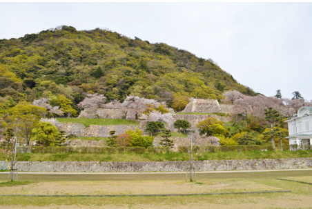

包括的バイオグラフィー：要約・年表・活動記録
宮部継潤(みやべけいじゅん)は近江・浅井氏に仕えた元比叡山の僧侶で、後に織田信長・豊臣秀吉に仕えた戦国~安土桃山時代の武将である[cite: 7]。僧籍を離れて浅井長政の家臣となり、元亀2年(1571年) に秀吉の横山城調略を機に信長方に転じた[cite: 7]。以後、秀吉・秀長らに重用され、中国・九州方面の戦役や城攻めを担った[cite: 7]。特に天正9年(1581年)の鳥取城攻めでは城の周辺砦 (雁金山城)を陥落させて兵粮ルートを断ち、一帯を飢餓攻めにした後に城代となり、治安回復や税制改革に尽力している[cite: 7]。この功績から天正17年(1589年)に因幡・但馬で5万石を与えられるなど、秀吉から厚く信頼された[cite: 7]。慶長4年(1599年)3月25日に没するまで豊臣政権に仕え、その死後には養子の宮部長房 (長熙) が関ヶ原の合戦で西軍に属し改易されるなど一族も動乱に巻き込まれた[cite: 7]。
| 生年・没年 | 享禄元年(1528年)頃生、慶長4年3月25日 (1599年)没[cite: 7]。享年約71歳。 |
|---|---|
| 氏名・号 | 宮部継潤、俗名は土肥孫八。禅正房・善祥坊と号す[cite: 7]。官職は中務卿。 |
| 出身・家系 | 近江国浅井郡宮部郷出身。父は土肥真舜、養父は宮部清潤[cite: 7]。 |
| 墓所 | 京都市左京区の霊山寺[cite: 7]。 |

| 年号・年次 | 出来事・役職と活動内容 |
|---|---|
| 享禄元年(1528年?) | 出生:近江浅井郡宮部郷に土肥氏の子として生まれる[cite: 7]。 |
| 天文5年(1536年) | 修行・剃髪:9歳で比叡山に上り、修行。剃髪し法名「禅正坊善祥」を得る[cite: 7]。 |
| 天文年間末頃~ | 還俗: 湯次神社の社僧善浄坊清潤の養子となる。宮部城(砦)を築く[cite: 7]。 |
| 元亀2年(1571年) | 転仕:「宮部の調略」に応じ、織田信長方に降る。秀次(万丸)を養子に迎える[cite: 7]。 |
| 天正8年(1580年) | 但馬豊岡城主: 羽柴秀長に従軍し、但馬豊岡城2万石の城主となる[cite: 7]。 |
| 天正9年(1581年) | 鳥取城攻め: 先鋒として雁金山城を陥落させ、降伏後は鳥取城城代に任じられる[cite: 7]。 |
| 天正17年(1589年) | 加増移封: 戦功により因幡・但馬で5万石を加増される[cite: 7]。 |
| 慶長元年(1596年) | 隠居: 家督を長房に譲り、自身は隠居して秀吉の御伽衆となる[cite: 7]。 |
| 慶長4年(1599年) | 死去: 京都・霊山寺にて死去。享年72[cite: 7]。 |
継潤は元亀2年10月、秀吉の横山城調略を機に信長・秀吉方に寝返る[cite: 7]。以降、旧主・浅井家から宮部城を織田方に固守した[cite: 7]。天正9年の鳥取征伐では、継潤ら軍が雁金山砦を攻め落として補給線を断ち、兵糧攻めを敢行して開城に追い込んだ[cite: 7]。城代就任後は治税改革に尽力し、その際に築いた石垣は現在も城跡で見ることができる[cite: 7]。